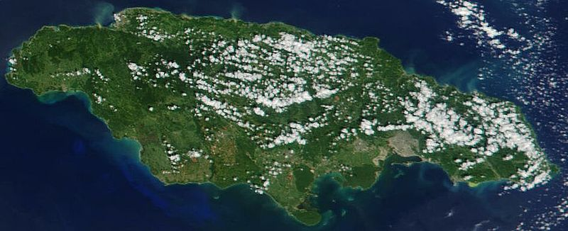

Patrick Allen
Sir Patrick Linton Allen é um político jamaicano, atual Governador-geral de seu país. Foi apontado governador-geral pela Rainha Elizabeth II em 2009.
Bruce Golding
Orette Bruce Golding é um político jamaicano, e foi primeiro-ministro da Jamaica de 11 de setembro de 2007 a 23 de outubro de 2011.
Isabel II ou Elizabeth II
Isabel II ou Elizabeth II é a Rainha do Reino Unido e de quinze outros estados independentes conhecidos como Reinos da Comunidade de Nações,
A Jamaica é uma democracia parlamentar e monarquia constitucional, com a rainha Elizabeth II servindo como a monarca e o chefe de Estado jamaicano. No entanto, como Elizabeth II é compartilhada como chefe de Estado de outros quinze países e reside principalmente no Reino Unido, ela é, portanto, representada pelo Governador-Geral da Jamaica, que tem como papel a aprovação de leis e outras funções do estado.

Imagem de satélite da Jamaica em novembro de 2001
Jamaica é a terceira maior ilha do Caribe.
Kingston
Kingston é a capital e maior cidade da Jamaica e está localizada na costa sudeste do país.
Montego Bay
Montego Bay é a capital da paróquia de Saint James, no Condado de Cornwall, Jamaica.
A geografia da Jamaica é parte de um arquipélago das Grandes Antilhas, no Mar do Caribe. Suas terras são os picos emersos de uma cadeia de montanhas submarina. O clima tropical alcança índices pluviométricos de até 5000 mm. A hidrografia é rica em cursos de água e belas cachoeiras.
Música
Apesar de ser uma pequena nação, a cultura jamaicana tem uma forte presença global. Os gêneros musicais reggae, ska e mento.
Comida
A Jamaica é um sonho que se torna realidade para os amantes de comida.
Esportes
O esporte é uma parte integrante da vida nacional na Jamaica.
A cultura jamaicana é caracterizada pelo sincretismo resultante da mistura dos vários povos que habitam a ilha desde os primórdios de sua descoberta pelos espanhóis, no século XVII. Aos nativos aruaques (aruwak) juntaram-se os latinos espanhóis, os negros africanos e os ingleses que dominaram a ilha posteriormente além imigrantes que para lá se transferiram após a extinção do regime escravista.